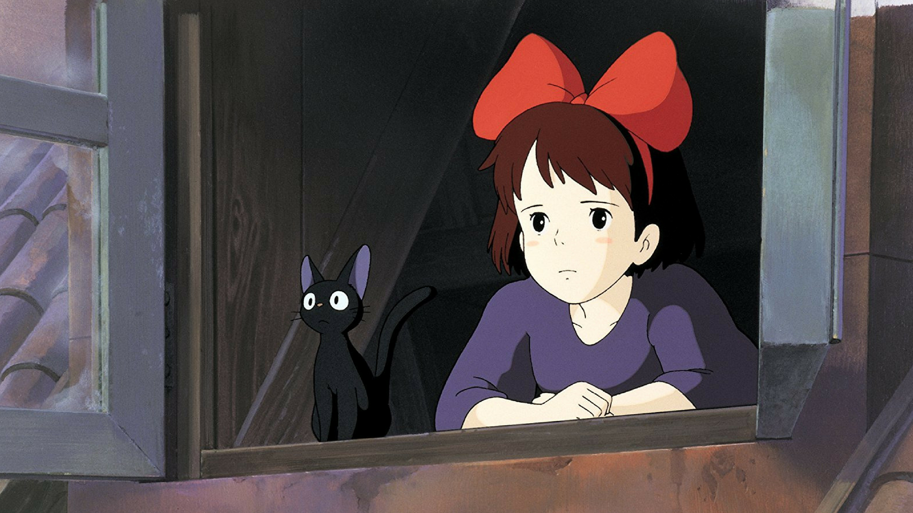
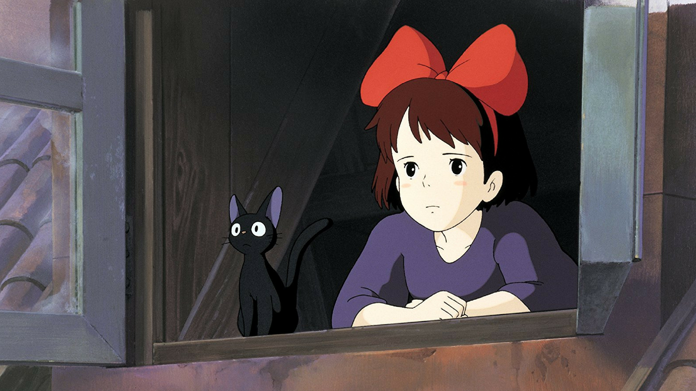


 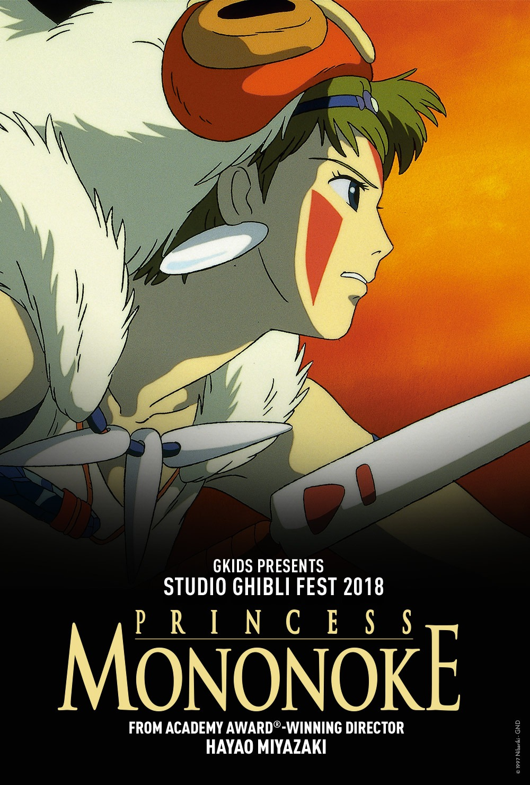
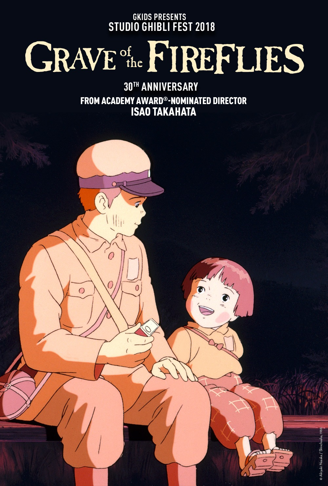
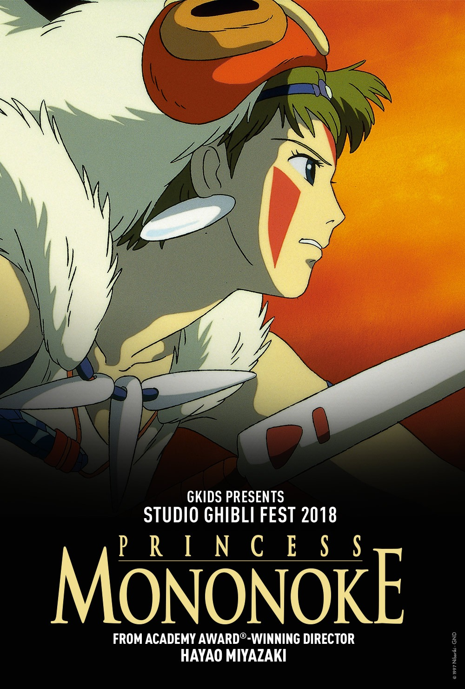
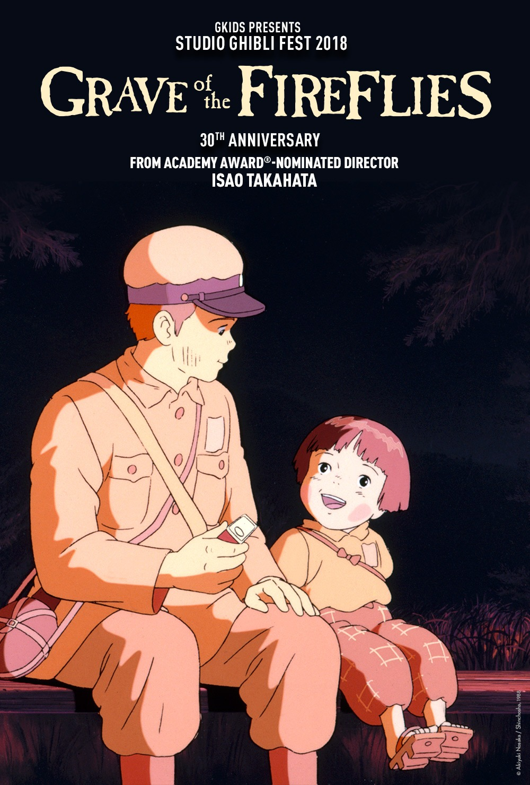
 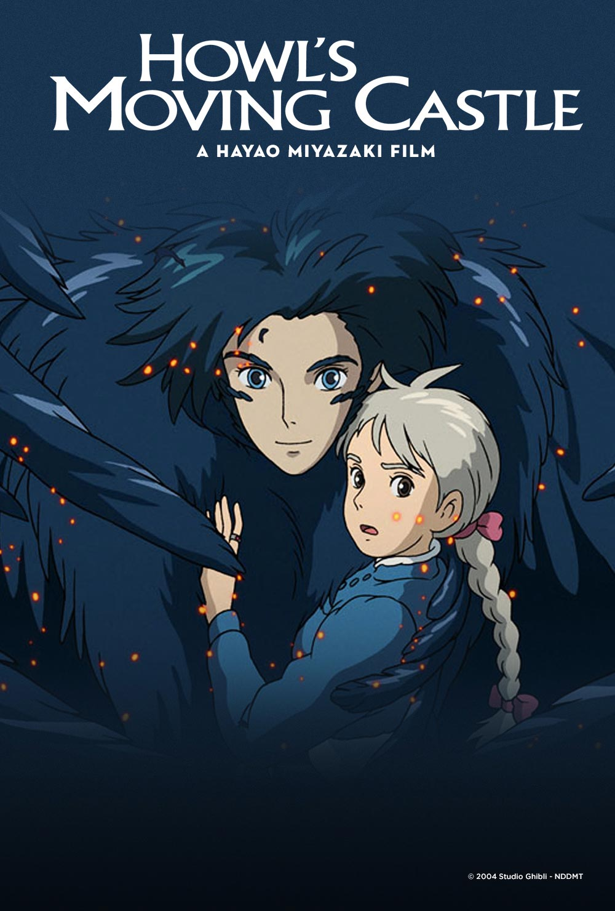
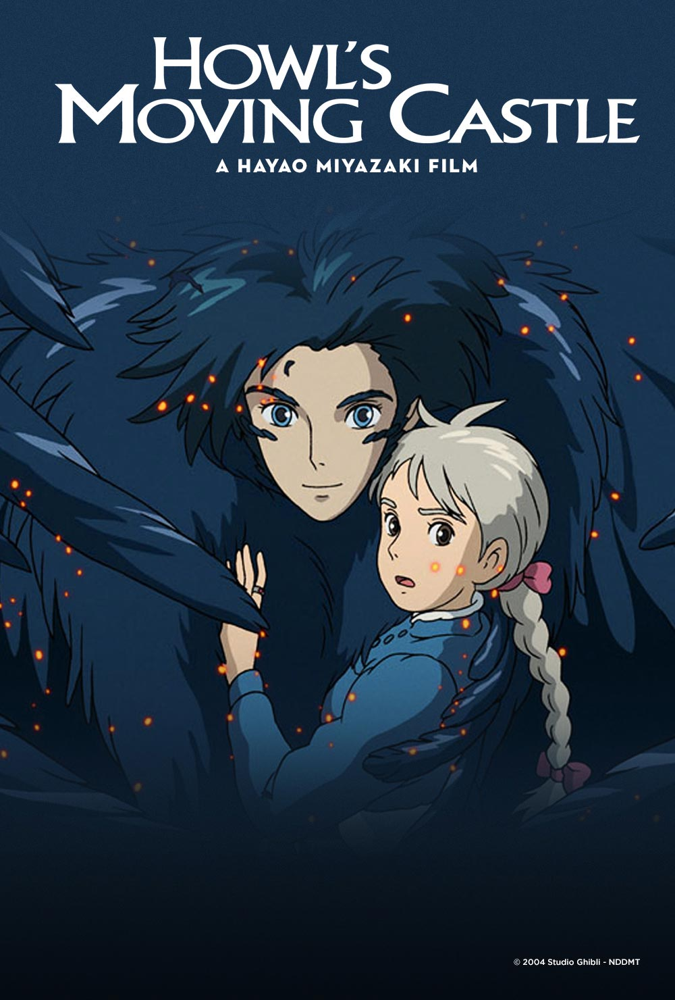
 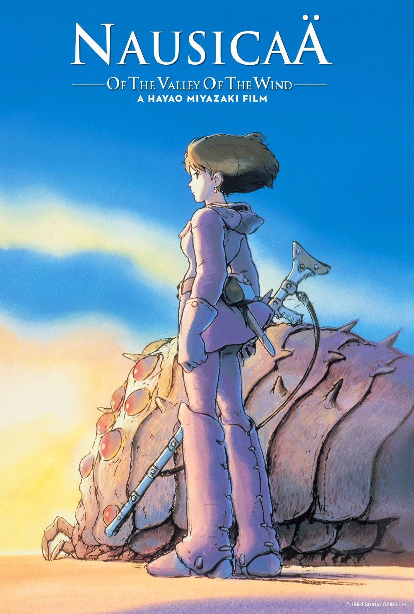
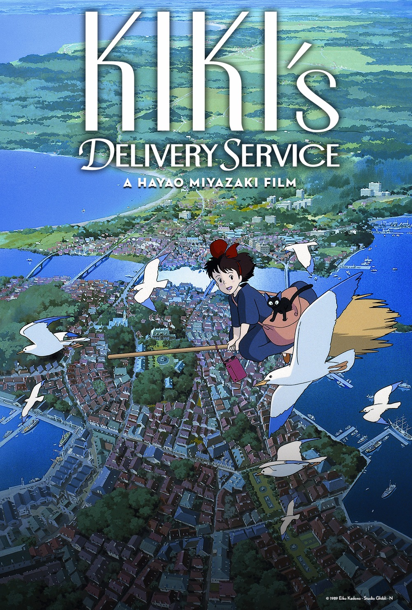
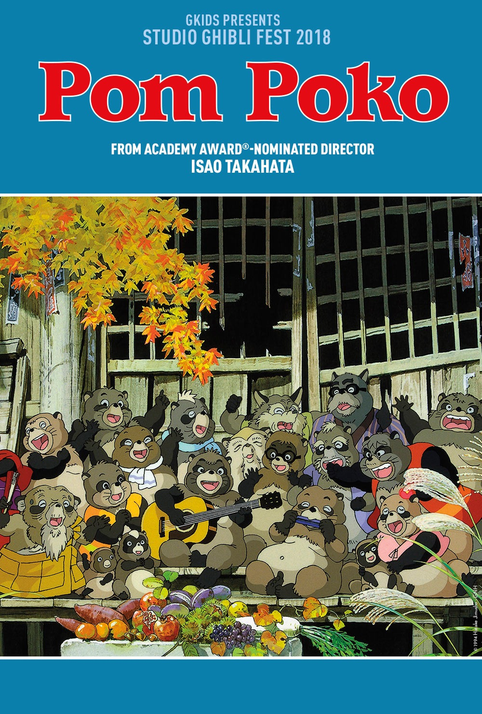
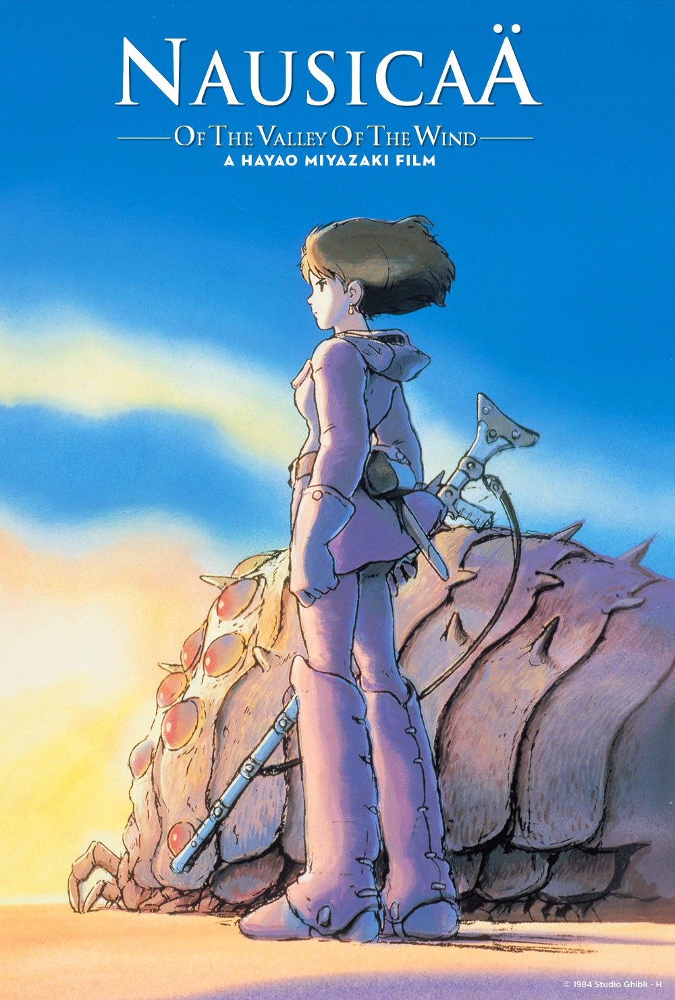
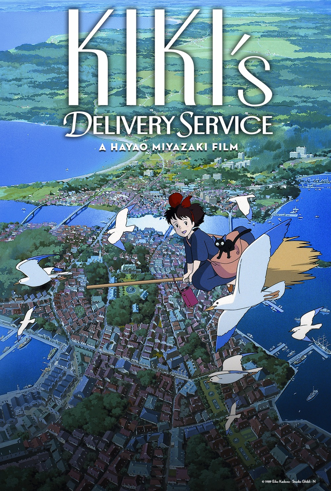
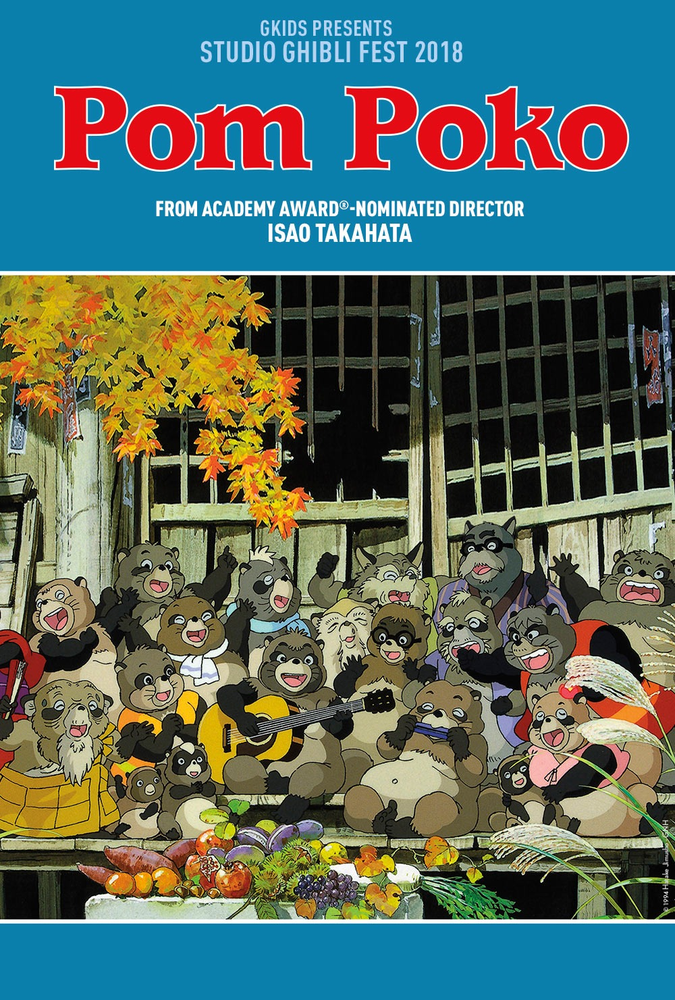
The History of Studio Ghibili
Studio, Ghibili, Inc., founded after the success of Nausicaä of the Valley of the Wind in 1985, is one of most acclaimed animation studios in the world, having touched the hearts and minds children and adults for over 30-years.
Headed by Hayao Miyazaki (left) and the late Isao Takahata (right), the two legendary directors have worked together to create famous titles such as Spirited Away, My Neighbor Totoro, and more recently The Tale of the Princess Kaguya.
After previously declaring his retirement, Studio Ghibili announced in February 2017 that Hayao Miyazaki will be directing a new feature film slated for release in 2020 titled How Do You Live?